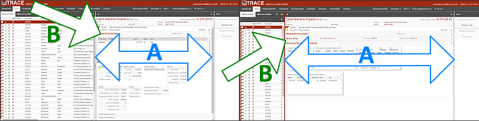
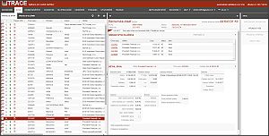
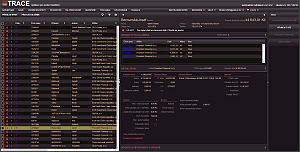
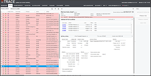
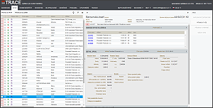

Menu Nastavení
Standardní rozložení - výběrem tohoto menu bude na příslušné záložce nastaveno původní (tovární) rozložení všech oken, sloupců i rámců.
Uložit vlastní rozložení - uživatel si pro příslušnou záložku může uložit své rozložení a kdykoliv si otevře na tomto počítači program, bude mít nastavení stále stejné nastavení k dispozici, dokud jej nepřeuloží, případně nepoužije položku Standardní nastavení. Při nastavení obrazovky se ukládají následující informace:
Rámce - změna velikosti jednotlivých oken obrazovky (obrázek šipky A)

Styly - uživatel si může vybrat z několika barevných schémat, které jsou v aplikaci implementovány:
EOS profil - v rámci schématu jsou použita barevná schéma společnosti EOS, profil je nastaven jako standardní.

Night profil - tmavé pozadí umožňující práci večer a v šeru bez intenzivního světla.

Blue profil - rozlišení obsahu buněk a jejich popisu, pozadí je laděno do jemně modré.

Grey profil - barevné schéma ve standardním provedení černé písmo, hnědé obsahy buněk a světlé pozadí.
